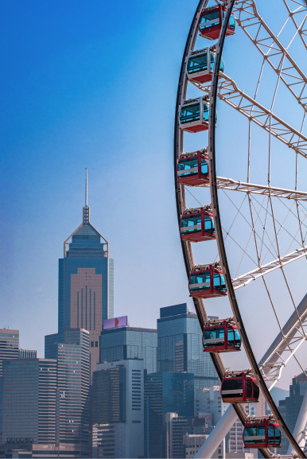
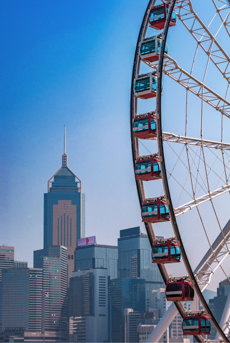

HONG KONG
Photography
Hong Kong is a photographer's dream with its contrasting combination of old and new, nature versus urban landscape – all just within walking distance. So it's no wonder that our hometown is continually captured in the form of jaw-dropping images by talented photographers all around the world. We've put together 7 of our favourite images that will remind you just how amazing this city is.
Learn More